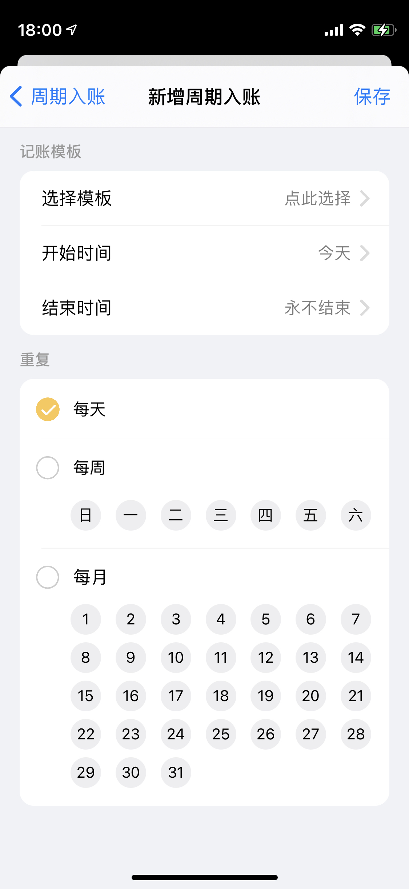

周期入账（应用内部）
对于周期性发生的固定收入/支出/转账/还款，设置一次周期记账后，每到设定的时间会自动为你生成一笔账单，无需再手动重复性的记录。
注意：周期的功能依附在模板功能下面。所以在创建周期入账之前，需要先创建对应的模板。

规则：
- 周期记账支持修改，但是修改只会对后面生成的账单有效，不影响已经生成的账单;
- 记账类型/账本/账户被删除，则对应模板失效，依赖该模板的周期随之失效，需要重新启用；
- 当天启动的周期，默认会在第一天同一时间执行，如果需要自己定义具体的时分，可以在设置中开启“账单时间“配置。